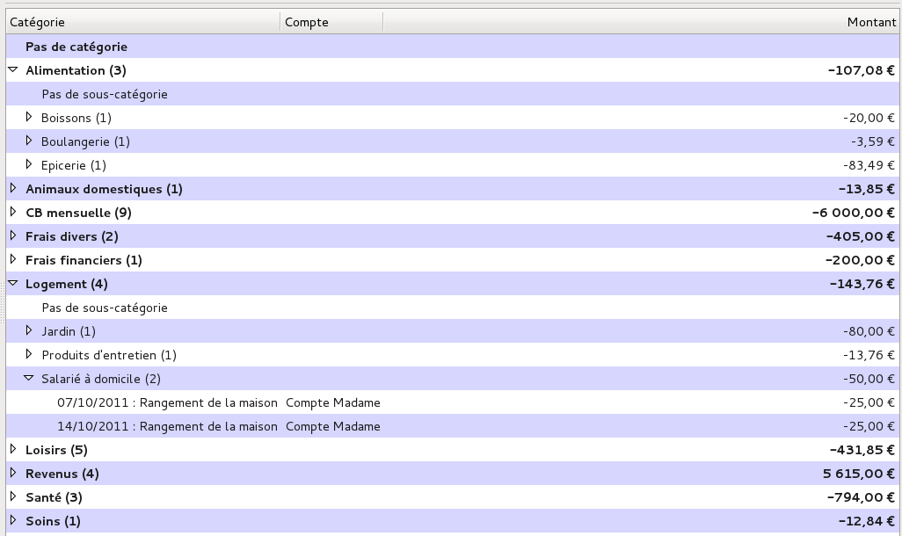
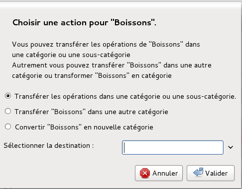

Pour pouvoir retrouver facilement les opérations, on les classe par catégories, par exemple «Maison », «Remboursement », qui peuvent éventuellement contenir des sous-catégories. En termes de comptabilité, il s’agit d’imputation comptable. Ne pas confondre avec le tiers, qui est celui avec qui on a la relation financière (un fournisseur ou un client).
Grisbi vous permet de faire la distinction entre les imputations comptables et les imputations budgétaires. Mais uniquement si vous le souhaitez.
Une imputation comptable, nommée Catégorie dans Grisbi, définit la nature de l’opération : frais de transport, loisirs, etc. Tandis qu’une imputation budgétaire définit la fonction de l’opération : il s’agit du travail, de la vie courante, des vacances, d’un projet d’aménagement, etc. D’une autre manière, quoi et pourquoi… Voir aussi le chapitre 14, Imputations budgétaires.
espace pour changement de thème Après son installation, Grisbi propose par défaut une liste de catégories. Vous pouvez l’utiliser telle quelle, la modifier selon vos besoins en ajoutant ou en supprimant des catégories ou des sous-catégories, ou bien importer ou exporter une autre liste générée auparavant par Grisbi. Les noms de fichier de ces listes ont pour extension .cgsb , par exemple mes-categories.cgsb.
Note : toutes vos opérations doivent être affectées à une catégorie et à une sous-catégorie, pour deux raisons : elles pourront ainsi être bien classées, donc facilement gérées, et de plus, si elles ne sont pas affectées, elles ne pourront pas être prises en compte dans les budgets prévisionnels.
Note : Il est donc conseillé de bien étudier votre liste de catégories, pour éviter d’avoir à la modifier fréquemment pour cause d’incohérences ou de redondances. Si vous avez vraiment des opérations inclassables, créez une catégorie ou des sous-catégories «Divers », mais n’abusez pas de leur emploi.
L’onglet Catégories sert à gérer toutes les catégories et sous-catégories de votre fichier de comptes.
Pour avoir accès à la gestion des catégories, sélectionnez Catégories dans le panneau de navigation ou avec la barre d’information (voir le chapitre 4, Accueil).
La barre d’information affiche, à gauche, le nom de la catégorie et de la sous-catégorie sélectionnées dans le pavé des détails et, complètement à droite, le solde des opérations affectées à la catégorie ou la sous-catégorie sélectionnée.
Le pavé des détails affiche deux éléments :
La barre d’outils des catégories présente les fonctions suivantes :
La barre d’outils peut être déplacée dans l’écran en cliquant sur sa poignée (petit rectangle vertical à gauche de la barre) et en la déplaçant. Pour la réattacher à son emplacement d’origine dans le pavé des détails, la remettre en haut de la fenêtre, le haut de la poignée placé sur le petit trait qui visualise sa place d’origine.
La liste des catégories et sous-catégories s’affiche dans le panneau des détails.

Figure 13.1: Liste des catégories et des sous-catégories
Elle affiche en haut la barre des libellés des colonnes ; ses champs d’affichage sont les suivants :
Vous pouvez déplacer la liste des catégories vers le haut ou vers le bas avec la molette de la souris, ou bien avec la souris et l’ascenseur vertical. Le déplacement éventuel vers la gauche ou la droite se fait avec la souris et l’ascenseur horizontal.
Pour afficher les sous-catégories d’une catégorie, cliquez sur le petit triangle à gauche de son nom, ou bien double-cliquez sur sa ligne ; cela affiche le libellé de toutes les sous-catégories, et éventuellement, en première position, Pas de sous-catégorie.
Note : ces triangles peuvent être remplacés, en fonction du thème de l’environnement de bureau ou du gestionnaire de fenêtres que vous utilisez, par d’autres caractères tels que +, -, >, <, etc.
Vous pouvez afficher plusieurs catégories déroulées. Pour ne plus les afficher, enroulez les catégories en cliquant sur le petit triangle à gauche de leur nom, ou bien double-cliquez sur leur ligne. Vous pouvez aussi dérouler ou enrouler toutes les catégories de la liste, en cliquant sur l’outil Affichage dans la barre d’outils et en choisissant Vue des catégories et des sous-catégories. Pour afficher seulement les catégories, cliquez sur l’outil Affichage dans la barre d’outils et choisissez Vue des catégories uniquement.
Les catégories et sous-catégories de votre fichier de comptes sont affichées par ordre alphabétique, avec deux exceptions : la première catégorie affichée est toujours la catégorie de libellé Pas de catégorie, qui reçoit toutes les opérations dont la catégorie n’est pas définie, et, à l’intérieur d’une catégorie, la première sous-catégorie affichée est toujours la sous-catégorie de libellé Pas de sous-catégorie, qui reçoit toutes les opérations dont la sous-catégorie n’est pas définie.
Le nombre d’opérations affectées à chaque catégorie ou sous-catégorie s’affiche, entre parenthèses, à la suite de son nom, et le montant total des opérations affectées à ces catégories ou sous-catégories s’affiche dans la colonne Montant, à droite sur la même ligne.
Note : vous pouvez configurer la devise des totaux de toutes les (sous-) catégories dans le menu Édition - Préférences (voir la section 22.2.4, Devises des totaux).
Pour sélectionner une catégorie ou une sous-catégorie, vous avez deux moyens :
Le nom de la catégorie ou sous-catégorie apparaît alors sur fond rose.
Un menu contextuel est disponible par un clic-droit sur la liste des catégories ; selon la ligne sélectionnée, vous pouvez exécuter les fonctions suivantes :
Une ligne de libellé Pas de sous-catégorie se comporte exactement comme une ligne de libellé de sous-catégorie.
Pour afficher les opérations, cliquez sur le petit triangle à gauche du libellé Pas de sous-catégorie ou celui d’une sous-catégorie, ou bien double-cliquez sur sa ligne, ce qui déroule la liste. Les opérations sont alors décrites sur une seule ligne, avec leur date, leur remarque éventuelle, le nom du compte concerné et leur montant.
Note : ces triangles peuvent être remplacés, en fonction du thème de l’environnement de bureau ou du gestionnaire de fenêtres que vous utilisez, par d’autres caractères tels que +, -, >, <, etc.
Vous pouvez afficher plusieurs lignes de sous-catégories déroulées. Pour ne plus les afficher, enroulez les opérations d’une sous-catégorie en cliquant sur le petit triangle à gauche de leur nom, ou bien double-cliquez sur leur ligne. Vous pouvez aussi dérouler ou enrouler toutes les opérations de toutes les catégories et sous-catégories de la liste, en cliquant sur l’outil Affichage dans la barre d’outils, et en faisant votre choix entre Vue des catégories uniquement, Vue des catégories et sous-catégories ou Vue complète.
Vous pouvez déplacer une opération d’une sous-catégorie vers une autre sous-catégorie de la liste (mais pas à partir de Pas de catégorie ni vers Pas de catégorie) en sélectionnant cette opération et en faisant un glisser-déplacer sur la sous-catégorie cible, exactement à l’endroit où son nom est entouré d’une bordure pointillée.
Un double-clic sur une ligne d’opération d’une catégorie ou d’une sous-catégorie ferme l’onglet Catégories, ouvre l’onglet Comptes et le sous-onglet du compte contenant cette opération, sélectionne l’opération concernée et l’affiche dans le formulaire de saisie. De cette façon, cette opération peut être affichée et modifiée facilement.
La façon la plus immédiate pour créer une catégorie ou une sous-catégorie est de saisir son nom pendant la création d’une nouvelle opération dans l’onglet des comptes (voir la section 8.17, Nouveau tiers, catégorie ou imputation budgétaire) ; mais vous pouvez aussi en créer ici, en cliquant sur l’outil Nouvelle catégorie ou Nouvelle sous-catégorie. Une boîte de dialogue s’ouvre ; suivant le cas, renseignez le nom de la catégorie et cochez si elle contiendra des crédits ou des débits, ou renseignez uniquement le nom de la sous-catégorie, puis validez.
L’outil Nouvelle sous-catégorie de la barre d’outils ne devient actif que lorsqu’une catégorie est sélectionnée dans la liste.
Pour modifier une catégorie ou une sous-catégorie, procédez comme suit :
Note : la sous-catégorie Pas de sous-catégorie est créée automatiquement par Grisbi ; vous ne pouvez pas la modifier.
Vous pouvez transférer des opérations dans une autre sous-catégorie ayant pour point commun soit le tiers, soit la remarque, soit les deux ; pour cela, procédez comme suit :
Note : la saisie du champ de libellé Sélectionner la destination bénéficie de la fonction d’auto-complètement.
Vous pouvez modifier l’organisation de vos sous-catégories en déplaçant le contenu d’une sous-catégorie vers une autre ou vers une nouvelle catégorie. Pour cela, sélectionnez une sous-catégorie, puis cliquez-droit et choisissez dans le menu contextuel :

Figure 13.2: Gestion des sous-catégories
Pour supprimer une catégorie ou une sous-catégorie, procédez comme suit :
Attention : la suppression d’une catégorie ou d’une sous-catégorie est irréversible !
Note : si la (sous-) catégorie que vous voulez supprimer ne contient aucune opération, aucune boîte de dialogue ne s’ouvrira et Grisbi la supprimera immédiatement.
Grisbi vous permet d’importer ou d’exporter les catégories d’un fichier de comptes, ce qui peut éviter de recréer tout un ensemble de catégories si on peut le trouver ailleurs déjà fait.
Pour importer une liste de (sous-) catégories, procédez comme suit :
Attention : d’une manière générale, il est déconseillé d’avoir des accents ou des espaces dans les noms des répertoires et fichiers utilisés par Grisbi. Si c’est le cas, renommez-les maintenant. Par exemple, les espaces peuvent être remplacées par des tirets bas (_).
Quelle que soit l’option choisie, il vous appartient ensuite de supprimer une à une toutes les catégories que vous ne voulez pas garder, ou d’en créer de nouvelles.
Note : si vous commencez un fichier de comptes neuf, vous aurez avantage à supprimer les catégories existantes par défaut avant d’importer une autre liste.
Pour exporter la liste de vos (sous-) catégories, procédez comme suit :
Attention : d’une manière générale, il est déconseillé d’avoir des accents ou des espaces dans les noms des répertoires et fichiers utilisés par Grisbi. Si c’est le cas, renommez-les maintenant. Par exemple, les espaces peuvent être remplacées par des tirets bas (_).